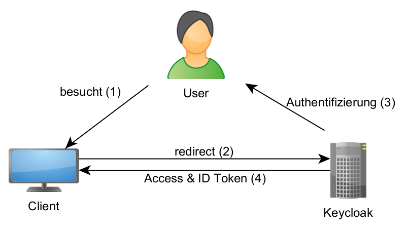

git clone https://github.com/aisge/securitydemo.git
git branch --allGerald Aistleitner <g.aistleitner@htl-leonding.ac.at>
Bisher waren unsere REST-Services immer für alle erreichbar, die Zugriff auf den Rechner hatten.
Absichern der Services ist über mehrere Wege möglich.
Folgende Varianten werden hier behandelt:
Benutzerkonfiguration in Properties-Files (Elytron)
Benutzerkonfiguration in der DB (Elytron JDBC)
JWT (SmallRye JWT)
OpenID Connect / Keycloak
Basis: Java 21, Quarkus 3.40, Keycloak 26.8, Angular 19+
Git-Projekt klonen und alle Branches anzeigen:
git clone https://github.com/aisge/securitydemo.git
git branch --allBranches: master (ohne Security), elytron.properties, elytron.jdbc, jwt, keycloak
Datenbank: H2 In-Memory — kein DB-Start nötig, Daten kommen aus import.sql
Starten mit ./mvnw quarkus:dev, Tests mit ./mvnw test
GET-Methoden: @RolesAllowed("user")
ändernde Methoden (POST/PUT/DELETE): @RolesAllowed("admin")
öffentlich: @PermitAll
import jakarta.annotation.security.RolesAllowed;
@GET
@RolesAllowed("user")
public List<Student> getAll() { ... }
@POST
@RolesAllowed("admin")
public Response create(Student s) { ... }Ohne Anmeldung → 401 Unauthorized, falsche Rolle → 403 Forbidden
Seit Quarkus 3: jakarta.* statt javax.*
Einfachste Variante: User, Passwörter und Rollen in Properties-Files.
Branch: elytron.properties
./mvnw quarkus:add-extension \
-Dextensions="quarkus-elytron-security-properties-file"application.properties:
# Basic Auth muss explizit aktiviert werden (sonst immer 401)
quarkus.http.auth.basic=true
quarkus.security.users.file.enabled=true
quarkus.security.users.file.users=test-users.properties
quarkus.security.users.file.roles=test-roles.properties
quarkus.security.users.file.realm-name=MyRealm
quarkus.security.users.file.plain-text=falsetest-users.properties — Klartext (plain-text=true) oder MD5-Hash:
# HEX( MD5( user ":" realm ":" passwort ) )
# echo -n "max:MyRealm:passme" | md5sum
max=00ad7bab4019042e5e96db859e25f14c
susi=32c811ad4a2990f38c5004cb4dbc7bd2test-roles.properties:
max=admin,user
susi=userHTTP-Client in IntelliJ (http-requests/students.http):
GET http://localhost:8080/students
Authorization: Basic susi passmeRestAssured — preemptive() schickt die Credentials sofort mit:
given().auth().preemptive().basic("max", "passme")
.when().get("/students")
.then().statusCode(200);Ohne echte Anmeldung (Dependency quarkus-test-security):
@Test
@TestSecurity(user = "testuser", roles = "user")
void getAll() { ... }User, Passwörter und Rollen in der Datenbank.
Branch: elytron.jdbc
./mvnw quarkus:add-extension \
-Dextensions="quarkus-elytron-security-jdbc"import.sql — Tabelle ist keine Entity, wird also hier angelegt:
drop table if exists quarkus_user;
create table quarkus_user (id int, username varchar(255),
password varchar(255), role varchar(255));
insert into quarkus_user values (1, 'max', 'passme', 'admin');
insert into quarkus_user values (1, 'max', 'passme', 'user');
insert into quarkus_user values (2, 'susi', 'passme', 'user');Mehrere Rollen: eine Zeile pro Rolle. 'admin,user' wäre eine einzige Rolle namens "admin,user" (→ 403). |
quarkus.http.auth.basic=true
quarkus.security.jdbc.enabled=true
quarkus.security.jdbc.principal-query.sql=\
SELECT u.password, u.role FROM quarkus_user u WHERE u.username=?
quarkus.security.jdbc.principal-query.clear-password-mapper.enabled=true
quarkus.security.jdbc.principal-query.clear-password-mapper.password-index=1
quarkus.security.jdbc.principal-query.attribute-mappings.0.index=2
quarkus.security.jdbc.principal-query.attribute-mappings.0.to=groupsTabelle um salt varchar(255) und iteration_count int erweitern, dann:
quarkus.security.jdbc.principal-query.sql=SELECT u.password, u.salt, \
u.iteration_count, u.role FROM quarkus_user u WHERE u.username=?
quarkus.security.jdbc.principal-query.bcrypt-password-mapper.enabled=true
quarkus.security.jdbc.principal-query.bcrypt-password-mapper.password-index=1
quarkus.security.jdbc.principal-query.bcrypt-password-mapper.salt-index=2
quarkus.security.jdbc.principal-query.bcrypt-password-mapper.iteration-count-index=3
quarkus.security.jdbc.principal-query.attribute-mappings.0.index=4
quarkus.security.jdbc.principal-query.attribute-mappings.0.to=groupsHash und Salt (Base64) erzeugt im Demo-Projekt der PasswordGeneratorEndpoint:
GET /passwords/passme — nur zum Üben, Passwörter gehören nie in eine URL!
Heute übliche Variante: User als Entity, Passwort als bcrypt-Hash.
@Entity
@UserDefinition
public class AppUser extends PanacheEntity {
@Username public String username;
@Password public String password; // BcryptUtil.bcryptHash(pw)
@Roles public String role; // hier: "admin,user" erlaubt
}Extension: quarkus-security-jpa
Die Services sollen via RBAC (Role Based Access Control) mit JWT abgesichert werden.
Branch: jwt
JWT = JSON Web Token
Nach RFC 7519 genormtes Access Token
Enthält alle wichtigen Informationen über eine Entität, deshalb
ist nicht jeweils eine neue Datenbankabfrage notwendig
muss die Sitzung nicht am Server gespeichert werden (stateless möglich)
JWT besteht aus 3 Teilen:
HEADER
PAYLOAD
SIGNATURE
Jeweils Base64-kodiert und durch einen Punkt getrennt (HEADER.PAYLOAD.SIGNATURE)
Header besteht meist aus zwei Teilen:
alg
Verwendete Signiermethode (HS256, ES256)
typ
Ist eigentlich immer JWT
{ "alg": "HS256", "typ": "JWT" }Enthält die eigentlichen Informationen, die an die Anwendung übermittelt werden sollen. Informationen werden als Key/Value-Paare bereitgestellt. Die Schlüssel werden als Claims bezeichnet.
Grundsätzliche werden 3 Arten von Claims unterschieden (siehe nä. Folie). Alle Claims sind optional! So wenige wie nötig integrieren zwecks Performance!
3 Arten von Claims:
Registrierte Claims
Sind im IANA JSON Web Token Claim Register registriert.
Deren Zweck ist im Standard festgelegt.
Beispiele: iss=Issuer, aud=Audience (Zieldomäne), exp=Expiration Time
Öffentliche Claims:
Sind nach Belieben definierbar, um Kollisionen in der Semantik zu vermeiden ist ebenfalls eine Registrierung im Register notwendig.
Private Claims:
Informationen, die speziell für die eigene Anwendung ausgetauscht werden sollen.
Darauf achten, dass keine Namenskollisionen mit öffentlichen Claims entstehen!
Signatur wird unter Verwendung der Base64-Kodierung des Headers und der Payload mit der angegebenen Signatur-/Verschlüsselungsmethode erstellt.
Dafür ist ein geheimer Schlüssel zu verwenden, der nur der Ursprungsanwendung bekannt ist.
Stellt sicher, dass die Nachricht unterwegs nicht verändert wurde!
Stellt sicher, dass der Absender der richtige ist (nur der hat privaten Schlüssel)
Link: JWT-Debugger
Extensions zum Prüfen (smallrye-jwt) und Erzeugen (smallrye-jwt-build) von Tokens:
./mvnw quarkus:add-extension \
-Dextensions="quarkus-smallrye-jwt,quarkus-smallrye-jwt-build"Konfiguration in application.properties:
# Prüfen eingehender Tokens (Public Key)
mp.jwt.verify.publickey.location=publicKey.pem
mp.jwt.verify.issuer=https://at.htl.4ahitm
# Signieren neuer Tokens mit Jwt...sign() (Private Key)
smallrye.jwt.sign.key.location=privateKey.pem
# Gültigkeit in Sekunden (Default 300)
smallrye.jwt.new-token.lifespan=3600RSA-Schlüsselpaar (2048 Bit, PKCS#8) für die Signatur mit RS256:
openssl genpkey -algorithm RSA -pkeyopt rsa_keygen_bits:2048 \
-out src/main/resources/privateKey.pem
openssl rsa -in src/main/resources/privateKey.pem -pubout \
-out src/main/resources/publicKey.pemKeys nicht unter META-INF/resources/ ablegen — dieser Ordner wird als statischer Web-Content öffentlich ausgeliefert! Den Private Key in echten Projekten nie committen. |
public record LoginData(String username, String password) { }
@Path("/security")
public class SecurityEndpoint {
@ConfigProperty(name = "mp.jwt.verify.issuer")
String issuer;
@POST
@Path("login")
@PermitAll
@Consumes(MediaType.APPLICATION_JSON)
@Produces(MediaType.TEXT_PLAIN)
public Response login(LoginData data) {
if (/* Username + Passwort prüfen */) {
String token = Jwt.issuer(issuer)
.upn(data.username())
.groups(Set.of("user")) // Rollen für @RolesAllowed
.sign(); // Key aus application.properties
return Response.ok(token).build();
}
return Response.status(Response.Status.UNAUTHORIZED).build();
}
}Auf Klassen- oder Methodenebene festlegen, welche Rolle(n) benötigt werden.
Die Rollennamen müssen exakt den groups im Token entsprechen:
@RolesAllowed("user")Zusätzlich kann das Token bzw. einzelne Claims injected werden:
@Inject
JsonWebToken jwt; // jwt.getName(), jwt.getGroups(), ...
@Inject
@Claim(standard = Claims.upn)
String upn;HTTP-Client in IntelliJ — Token automatisch speichern:
POST http://localhost:8080/security/login
Content-Type: application/json
{ "username": "susi", "password": "passme" }
> {% client.global.set("token", response.body); %}
###
GET http://localhost:8080/students
Authorization: Bearer {{token}}RestAssured: given().auth().oauth2(token).when().get("/students")
Das Token wird nach dem Login meist im LocalStorage abgelegt und muss bei allen Requests im Header mitgesendet werden — dafür ein funktionaler Interceptor:
export const authInterceptor: HttpInterceptorFn = (req, next) => {
const token = localStorage.getItem('token');
return next(token
? req.clone({ setHeaders: { Authorization: `Bearer ${token}` } })
: req);
};Aktivieren in app.config.ts:
provideHttpClient(withInterceptors([authInterceptor]))Ein Guard prüft z.B., ob ein Token vorhanden bzw. noch nicht abgelaufen ist, und leitet sonst auf die Login-Maske um:
export const authGuard: CanActivateFn = () => {
const authService = inject(AuthService);
const router = inject(Router);
return authService.isLoggedIn()
? true
: router.createUrlTree(['login']);
};Routing-Tabelle:
{ path: 'students', component: StudentsComponent, canActivate: [authGuard] }Einsatz von Keycloak zur Benutzer- und Rechteverwaltung (OpenID Connect).
Branch: keycloak
Open-Source-Software
zertifizierte OpenID-Connect-Implementierung (CNCF-Projekt, ursprünglich Red Hat)
SSO (Single Sign On)
Eine Identität für mehrere Anwendungen (analog Google od. Facebook-Login)
Kümmert sich um Authorisierung und Authentisierung
Zugriff auf LDAP bzw. Active-Directory-Server möglich
Kerberos-Server (Windows Login)
Einsatz als Identity Broker möglich (Authentifizierung über externen Identity Provider wie Google, etc.)

Mit Extension quarkus-oidc und ohne quarkus.oidc.auth-server-url startet Quarkus im Dev- und Testmodus automatisch einen Keycloak-Container (Docker/Podman nötig).
./mvnw quarkus:add-extension \
-Dextensions="quarkus-oidc"quarkus.oidc.client-id=quarkus-client
quarkus.oidc.credentials.secret=secret
# Realm (User, Rollen, Clients) aus src/main/resources importieren
quarkus.keycloak.devservices.realm-path=quarkus-realm.json
# fixer Port, damit der Angular-Client den Issuer kennt
%dev.quarkus.keycloak.devservices.port=8180
# eigener Keycloak für prod
%prod.quarkus.oidc.auth-server-url=http://localhost:8180/realms/quarkus-realmRealm im Demo-Projekt: quarkus-realm, User max/susi (Passwort passme), Clients quarkus-client und angular-client
Eigener Keycloak-Container (Image jboss/keycloak wird nicht mehr gepflegt):
docker run -d --name keycloak -p 8180:8080 \
-e KC_BOOTSTRAP_ADMIN_USERNAME=admin \
-e KC_BOOTSTRAP_ADMIN_PASSWORD=passme \
quay.io/keycloak/keycloak:26.8 start-devRealm beim Start importieren — Dateiname im Container muss <realm>-realm.json lauten:
docker run -d --name keycloak -p 8180:8080 \
-e KC_BOOTSTRAP_ADMIN_USERNAME=admin \
-e KC_BOOTSTRAP_ADMIN_PASSWORD=passme \
-v "$PWD/src/main/resources/quarkus-realm.json:\
/opt/keycloak/data/import/quarkus-realm-realm.json:ro,Z" \
quay.io/keycloak/keycloak:26.8 start-dev --import-realmKonfigurationsmöglichkeiten: Keycloak Container-Doku
http://localhost:8180 öffnen und mit den Admin-Credentials anmelden
Dropdown links oben → Create realm → Name quarkus-realm
Realm roles → Create role: admin, user
Users → Add user, danach
Tab Credentials → Set password (Temporary: Off)
Tab Role mapping → Assign role
Test-Login in der Account Console:
http://localhost:8180/realms/quarkus-realm/account
Seit Keycloak 17 gibt es kein /auth mehr in den URLs. |
Jede Anwendung muss in Keycloak als Client registriert werden: Clients → Create client
Backend quarkus-client
Client authentication: On (früher "Access Type: confidential")
Standard flow: On, Direct access grants: On (für Tests)
Valid redirect URIs http://localhost:8080/*, Web origins http://localhost:8080
Secret: Tab Credentials
Für Single-Page-Apps (Angular) einen eigenen Client anlegen:
Frontend angular-client
Client authentication: Off (public — ein Browser kann kein Secret geheim halten)
Valid redirect URIs http://localhost:4200/*, Web origins http://localhost:4200
Tab Advanced → PKCE Code Challenge Method: S256
Für @RolesAllowed reicht quarkus-oidc — Realm-Rollen (realm_access/roles) werden automatisch übernommen
quarkus-keycloak-authorization (Policy Enforcer) nur für feingranulare Keycloak-Policies nötig
quarkus.oidc.auth-server-url=http://localhost:8180/realms/quarkus-realm
quarkus.oidc.client-id=quarkus-client
quarkus.oidc.credentials.secret=###credential einsetzen###
# CORS für Angular-Client
quarkus.http.cors.enabled=true
quarkus.http.cors.origins=http://localhost:4200
quarkus.http.cors.methods=GET,POST,PUT,DELETE,OPTIONS
quarkus.http.cors.headers=Authorization,Content-Typecurl -X POST \
http://localhost:8180/realms/quarkus-realm/protocol/openid-connect/token \
--user "quarkus-client:secret" \
-H "Content-Type: application/x-www-form-urlencoded" \
-d "username=susi&password=passme&grant_type=password"POST http://localhost:8180/realms/quarkus-realm/protocol/openid-connect/token
Authorization: Basic quarkus-client secret
Content-Type: application/x-www-form-urlencoded
username=susi&password=passme&grant_type=password
> {% client.global.set("token", response.body.access_token); %}| Password-Grant ist in OAuth 2.1 nicht mehr vorgesehen — nur für Tests! |
Dependency quarkus-test-keycloak-server (scope test) — holt Tokens vom Dev-Services-Keycloak:
@QuarkusTest
class StudentEndpointTest {
static final KeycloakTestClient keycloakClient = new KeycloakTestClient();
@Test
void getAll() {
// getAccessToken(username, passwort, clientId)
given().auth().oauth2(
keycloakClient.getAccessToken("susi", "passme", "quarkus-client"))
.when().get("/students")
.then().statusCode(200);
}
}Nur Rollenlogik testen, ganz ohne Keycloak: @TestSecurity(user = "susi", roles = "user")
Package angular-oauth2-oidc, Authorization Code Flow mit PKCE (Implicit Flow ist veraltet):
export const authCodeFlowConfig: AuthConfig = {
issuer: 'http://localhost:8180/realms/quarkus-realm',
redirectUri: window.location.origin,
clientId: 'angular-client',
responseType: 'code',
scope: 'openid profile email',
requireHttps: false // nur lokal!
};
// app.config.ts - Interceptor hängt Access Token automatisch an
provideHttpClient(withInterceptorsFromDi()),
provideOAuthClient({ resourceServer: {
allowedUrls: ['http://localhost:8080'], sendAccessToken: true } })Login: oauthService.initCodeFlow(), Logout: oauthService.logOut()